×4
sont des ransomwares

via un tiers en 2 ans

subissent un impact économique


Asie-Pacifique 34 %, Amérique du Nord 24 % des incidents mondiaux (2024). Secteur n°1 : l'industrie, 27,7 % de toutes les attaques, 5ᵉ année consécutive en tête.